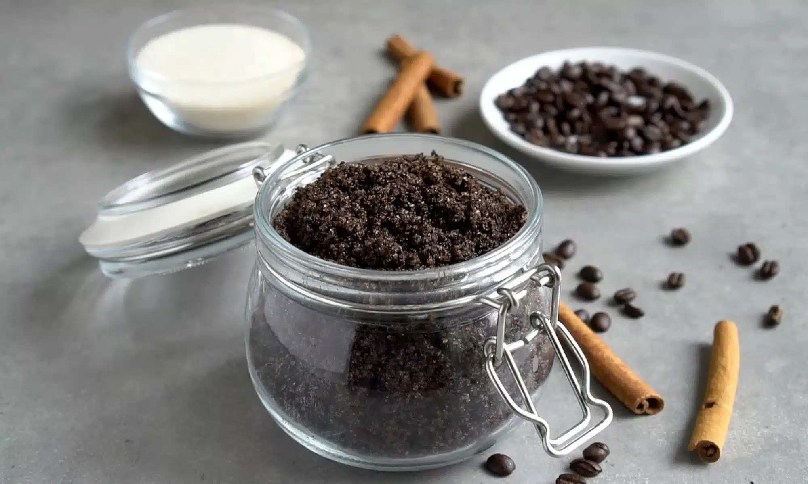

Mens Coconut Coffee Scrub

Description
Today we will make a coffee sugar scrub that uses fresh ground cofee, orgranic cane sugar, ground cinnamon, and vanilla extract.
Ingredient List
- Ground coffee
- Vanilla Extract
- Cinnamon
- Coarse Sugar
- Coconut Oil
- Essential Oil
Directions
- Grind coffee into a large bowl
- Mix sugar and coffee
- Mix in coconut oil, vanilla, and cinnamon
- Mix well
- Add essential oil
- Store in glass mason jar in a dry, cool area